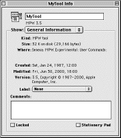

SYNTAX
SetVersion file [-b] [-country name] [-csource file] [-d] [-fmt nf.mf] DESCRIPTION The SetVersion command allows you to set or increment components of a file's version. To do this you can use either of two version formats that correspond to the two types of resources in which the version can be stored. The components of the first format are stored in an MPW-specific resource of type 'MPST' and ID 0. The components of the second format are stored in a Finder-related resource of type 'vers' and ID 1 or 2.
In the 'MPST' format, the version is displayed in a simple form as version.revision where version and revision represent the file's version and revision number (for example, 1.4). The resource containing this version information ('MPST', 0) is used by • applications (for example, in their About dialog boxes) • MPW tools (for instance, when -p displays version information) • Commando dialog boxes, each of which displays version information below its "do it" button Since SetVersion uses 'MPST', 0 by default, you can either omit -t (type) and -i (ID) or explicitly specify 'MPST' for -t and 0 for -i. This tells SetVersion that you want to use the 'MPST' resource and thus controls the options that you can use with this tool, although some options can be used for both 'MPST' and 'vers' resources. For instance, both allow you to set and increment version and revision numbers (-sv, -v, -sr, and -r). Other options are specific to 'MPST' and allow you to do such things as • specify a prefix (-prefix) for the version number and a suffix (-suffix) for the revision number (which allows you to create more complex version numbers such as "Version x1.23B2") • set the format for the version and revision number (-fmt)
In the second format, the version is displayed in a more complex form as version.revision.bugFix.release.nonrelease where version and revision refer to the version and revision numbers; bugFix to the bugFix number; release to the release letter (d for development, a for alpha, b for beta, omitted for final); and nonrelease to the nonrelease number. (For instance, 1.4d2 is a valid revision number of this format.) As with the first version number format, the resources containing this information ('vers', 1 or 'vers', 2) are used by applications, MPW tools, and Commando dialog boxes. However, unlike the other resource, 'vers' resources are also used by the Finder to • view files by their version • display in the file's Get Info window the version of the file (contained in 'vers', 1) and the version of the set of files, or bundle, of which it is a part (contained in 'vers', 2) To use this version format, you must explicitly specify 'vers' for -t (type) and either 1 or 2 for -i (ID). Doing so controls which options you can use with this command. In addition to the -sv, -v, -sr, and -r options that can be used for both 'vers' and 'MPST' resources to set and increment version and revision numbers, you can use other options that are specific to 'vers' resources. These allow you to do such things as • set (-sb) and increment (-b) the bug fix number • set the release letter (-stage) • set (-sx) and increment (-x) the nonrelease number
Note
Options for 'MPST' and 'vers' resources
There are two additional ways to set the version of a file: you can use -version to set the version as a string (for example, '3.3b1') or you can define the version as a constant in a source file. The second method allows you to access a source file's version even when its resource is damaged. You can update a version set this way by using the -csource, -[p]source, or -rezsource options. Normally SetVersion is used as part of a makefile to automatically increment specific version number components each time an application or tool is rebuilt. Note that when SetVersion modifies a file's 'MPST' or 'vers' resource, it does not change its modification date. Thus using this command does not affect the file's makefile. INPUT An input file (file) that contains either an 'MPST' resource or one of the 'vers' resources. OUTPUT None ALIAS RESOLUTION This command resolves all Finder aliases used as part of any pathname or filename, including both embedded aliases and leaf aliases. If you wish to use SetVersion to manipulate the version of a Finder alias file, use the option -noResolve. STATUS
SetVersion can return the following status codes:
PARAMETERS file Specifies the file for which the version number is set. OPTIONS -b Increments the bug-fix level by one. -country name
Specifies a country or region from the Text Utility's country code. Normally SetVersion uses the code
from the current country. The table below lists the names that you can specify for this option.
-csource file Updates the string constant in the specified C source file. This sets the version number as a string constant in the file itself, allowing you to retrieve the information even if the file's resource fork is damaged. The constant is set to be the same as that specified by the 'MPST' resource or the short version string from a 'vers' resource, which is normally just the version and revision number. The SetVersion tool assumes that the constant is defined as a string constant in a #define, somewhere in the first 12,800 characters of the file, as follows: #define Version "ver.rev…"∆∆∆∆∆∆∆∆∆∆/*comment*/ The ∆ characters indicate a sufficient number of spaces to allow for future changes in the size of the version component values. Leave as many as necessary--too many are not a problem but using too few results in an error. The comment is required.
Note -d Writes the (updated) version component values to standard output. For 'vers' resources, the display indicates which values go with which resource (that is,'vers', 1 or 'vers', 2). -fmt nf.mf Formats the version and revision values to the specified format, where n and m are numbers 1 to 10 specifying the field width, and f is the letter D or Z specifying either leading spaces or zeros. This means that if the version or revision number is larger than the specified field width, the width is enlarged to contain the entire value. If either number is smaller than the specified field width, it is independently padded up to the specified width with leading spaces (D) or zeros (Z). For example, a format of 1Z.3Z for a version number of 10.2 would be formatted as d10.002. Note that the default format is 1Z.1Z; if you omit either the version (nf) or the revision (mf) format, SetVersion formats that value according to the default.
Note -i id Specifies the resource ID as either 0, 1, or 2. For an 'MPST' resource, SetVersion assumes an ID of 0. For a 'vers' resource, you must specify an ID of 1 or 2. Omitting this option while specifying a 'vers' resource sets the version for both 'vers' 1 and 2. This option must be omitted if you specify -sync. -noResolve Prevents the resolution of the leaf alias of the target file path. Using this option you can operate on a Finder alias file instead of the file to which it refers. -p Writes the version number of both SetVersion and file to diagnostic output. For file, SetVersion looks for the version number in the resource specified by -t. -prefix prefix Specifies a prefix for the version number, where prefix can be any string that does not contain a period or slash (/) and does not end with a digit (0-9), a space, or the % or ∆ (Option-J) characters. (You can insert a space by choosing an appropriate -fmt format with leading spaces for the version number.) Once the prefix is set, you can change it only by specifying another -prefix string. Alternatively, you can remove the prefix by specifying the prefix as a period (.). -[p]source file Updates the string constant in the specified Pascal source file. This sets the version number as a string constant in the file itself, allowing you to retrieve the information even if the file's resource fork is damaged. The constant is set to be the same as that specified by the 'MPST' resource or by the short version string from a 'vers' resource, which is normally just the version and revision number. The SetVersion tool assumes that the constant is defined as a string constant in a CONST section, somewhere in the first 12,800 characters of the file, as follows: Version = 'ver.rev…';∆∆∆∆∆∆∆∆∆∆{comment} The ∆ characters indicate a sufficient number of spaces to allow for future changes in the size of the version component values. Leave as many spaces as necessary (up to the limit of the 'vers' resource) but don't use too few or you get an error. Note that the comment is required and that you can place spaces and tabs before and after the = character. Note that SetVersion ignores case and skips Pascal comments when searching for the Version identifier in the source. Use -verid to search for a different identifier (instead of Version). -r Increments the revision number by 1. -rezsource file Updates the resource definition in the specified resource compiler source file. This sets the version number as a resource in the file itself. The constant is set to be the same as that specified by the 'MPST' resource or by the short version string from a 'vers' resource, which is normally just the version and revision number. SetVersion assumes that the definition is somewhere in the first 12,800 characters of the file and is specified as described in the following format: For a SetVersion 'MPST' resource,
type 'MPST' as 'STR ';
Note For a Finder 'vers' resource,
resource 'vers' (i) { The ∆ characters indicate a sufficient number of spaces to allow for future changes in the size of the fields. Leave as many spaces as necessary (up to the limit of the 'vers' resource) but don't use too few or you get an error. Note that the comments are required. SetVersion ignores case and skips Rez comments when searching for the characters "resource 'MPST'" or "resource 'vers'" in the source. Since this resource definition is destined to be placed in a file's resource fork, this option defines the actual resource that SetVersion seeks in the file. Therefore this option fixes the Version identifier in the 'MPST' resource; you cannot override it by using -verid. -sb bugFix Sets the bug fix number, where bugFix can be any integer value. If the bug fix number is 0, SetVersion suppresses it from the version. -sr revision Sets the revision number, where revision can be any integer value. -stage stage Sets the release stage for a 'vers' resource, where stage can be specified as dev[elopment], alpha, beta, or rel[ease]. This is used to set the release letter in the version as d, a, b, or none, respectively. If you specify rel[ease], SetVersion suppresses the nonrelease-level number as modified by -x or -sx. -suffix suffix Specifies a suffix for the revision number, where suffix can be any string that does not contain a period or slash (/) and does not end with a digit (0-9), a space, or the % or ∆ (Option-J) characters. (Note that you can insert a space by choosing an appropriate -fmt format with leading spaces for the revision number.) Once the prefix is set, you can change it only by specifying another -prefix string. Alternatively, you can remove the prefix by specifying the prefix as a period (.). -sv version Sets the version number, where version can be any integer value. -sx nonrel Sets the nonrelease number, where nonrel can be any integer value. -sync 1 | 2 Synchronizes the 'vers' resources, using either 1 ('vers', 1) or 2 ('vers', 2) as the master copy. This option copies the version number from either the 'vers', 1 or 'vers', 2 resource in the short and long version strings. This synchronization also copies the BCD value, but not the country code, contained in the 'vers' resource.
Note You can specify other options on the command line to modify the master copy before copying it to the other resource. For instance, the following command line increments the revision number (-r) of the 'vers', 1 resource before copying the version number to 'vers', 2: SetVersion -t 'vers' -sync 1 -r -t type Specifies the resource type--either 'vers' or 'MPST'. The default is 'MPST'. -v Increments the version number by 1. -verid identifier Specifies the identifier to use when searching for the -[p]source CONST or -csource #define identifier. -version fmtString Specifies the version number by using the string fmtString instead of the individual options, such as -sv and -v, that set and increment the version number. This option is intended for explicit use of the SetVersion tool, while the individual component options are more useful in scripts and makefiles where macros can be used to define individual component parameters. The format string fmtString specifies the format of the version number and whether the individual components are to be set, incremented, or left alone. The format string for the 'vers' resource has the general format v.rbsx where v is the version number, r the revision number, b the bug fix level number, s the release stage letter (d, a, b, or omitted for release stage), and x the nonrelease level number (omitted for release stage). The 'MPST' string resource has the format v.r where v is the version number and r is the revision number. A prefix and suffix can be specified as well. Each of the format string fields (except the prefix and suffix for 'MPST') can be any of the following: • an integer (or appropriate letter for the stage component) • the % character to indicate that the corresponding component is to be left alone • the ∆ (Option-J) character to indicate that the corresponding component is to be incremented -verstring longString Sets the long version string to longString. A ^ character placed in this string indicates the placement of the version, used each time SetVersion updates it. Note that the short version string (normally just the version and revision number) is inserted into the position specified by the ^ character. -x Increments the nonrelease level by 1. SetVersion suppresses this number for the release stage (-stage rel[ease]). EXAMPLES The fictional Example tool contains a SetVersion 'MPST' string resource. The command line SetVersion Example -sv 1 -r -psource Globals -rezsource Example.r -d performs many tasks. It sets the version number to one (-sv) and increments the revision number by one (-r). It updates the Pascal include file Globals (-psource) and the resource file Example.r (-rezsource) to match the 'MPST' resource. The Globals file contains the tool's global declarations, including the version string, and the Example.r resource file contains the tool's resource definitions. Finally, it writes the new version to standard output (-d). Setting the same version information as the previous example, this next example illustrates how the -version option can be used in place of -sv and -r. Here the ∆ character indicates that the revision number is to be incremented. SetVersion Example -version 1.∆ -psource Globals -rezsource Example.r -d In the following example, a pair of SetVersion commands generates 'vers', 1 and 'vers', 2 resources for the fictional MPW tool, MyTool. The first SetVersion command sets the version number, 3.5, in a 'vers', 1 resource. It then specifies a long version string (-verstring) that contains the short version string (3.5), inserted at the position indicated by the ^ character.
SetVersion MyTool -version 3.5 -t vers -i 1 -verstring ∂ The second SetVersion command sets the 'vers', 2 resource. In this resource, the version is set unconditionally to 3.5 and the long version string to "MPW 3.5". The MPW release is MPW 3.5, and MyTool is one of the files that belongs to that release. SetVersion MyTool -version 3.5 -t vers -i 2 -verstring "MPW 3.5" The Finder Get Info dialog box, shown below, illustrates the result of using these commands. The 'vers', 1 resource, used in the long version string "3.5, Copyright © 1987-2000, Apple Computer, Inc.", indicates the version of MyTool as a file while the 'vers', 2 resource indicates the version of MPW as a whole. 
MPWversion = 3.5 # product release
Copyright = Copyright © 1987-2000, Apple Computer, Inc.
ver1 = ^, {Copyright} # long string for 'ver',1
ver2 = MPW {MPWversion} # long string for 'ver',2
MyToolVer = -sv 3 -r # version and revision
Stage = -stage rel -sb 0 # release stage
• {MPWVersion}--the MPW release (which can be changed by a Make -d option when Make is called) • {Copyright}--the copyright string (which is concatenated into the 'vers', 1 long version string in the macro {ver1}) • {ver1}--the long version string for the 'vers', 1 resource, displayed as the tool's individual version number • {ver2}--the long version string for the 'vers', 2 resource (which uses {MPW version}, although ^ could have been used here), displayed at the top of the Finder's Get Info dialog box • {MyToolVer}--the numbering control for the individual tool (used in the makefile for other tools so that for each tool the version number is set to 3 and the revision incremented by 1) • {Stage}--the release stage and bug fix level (set to null and zero to ensure that only the version and revision numbers are displayed) These macros are then used in the following makefile script to set the version of MyTool in the 'vers', 1 and 'vers', 2 resources.
SetVersion MyTool -t vers -i 1 {MyToolVer} {stage} ∂ SetVersion MyTool -t vers -i 2 -version {MPWversion} -verstring "{ver2}" SEE ALSO Information about version resources in Inside Macintosh
|